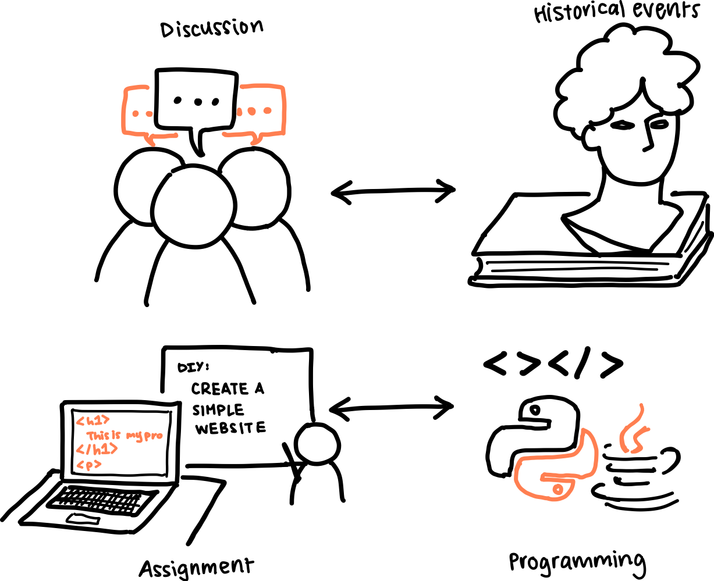

When to use and when not to use
| Appropriate Contexts ✔ |
Inappropriate Contexts ✗ |
-
You're a professor who wants to help students retain more information
during lecture. You slowly incorporate a method you think would
benefit your students and collect timely feedback from them.
-
You don't focus just on the rankings that are provided for the
department of the class that you're teaching. Instead, you consider
all aspects of your course and draw inspiration from other
departments that your course may rely on. For example, a philosophy
course is usually highly theoretical; although philosophy can
most certainly be applied, the categories themselves are quite
abstract and broad (e.g. metaphysics). Data ethics, on the other
hand, is a lot more applicable and also requires more technological
understanding.
-
You're the head of a department and you want to create more resources
to help professors develop their curriculums. You use the rankings to
guide this process.
|
- You incorporate the top ranking teaching methods without
considering the structure of your class. For example, a
mathematics course with required programming may have a differing
set of effective teaching methods than a traditional, proof-based
mathematics course.
-
You focus solely on the methods that are ranked and ignore
other potential teaching methods. The list of teaching methods
in the model may not be comprehensive, so it's important
that you experiment with new methods that are not included.
|
Interpreting the rankings
My rankings are not definitive and can be subject to change. The rankings
are only a reflection of the average impact the teaching method had on students'
information retention during the study. That being said, a good way to interpret
the rankings would be to first look at the department that the rankings are listed under.
Courses within a department share certain patterns and topics in their curriculum,
so it's important to consider the rankings in that context. The methods correspond
more to these patterns than to the department itself.
For example, consider a history department compared to a computer science department.
Most likely, the history courses will contain lots of references to historical
events that need to be memorized–this would best be correlated with group discussions,
where students can parse these events and come to their own deductions, strengthening
their understanding and memory of the events. However, for a computer science course,
group discussions wouldn't necessarily be as effective as the student implementing
the code themselves through an assignment passed out during class. This is because
a lot of coding is logic-dependent, and mastering this logic requires the student to
actively participate in coding to gain the intuition, as opposed to discussing
concepts with classmates.

Additionally, it may be important to consider the correlations between certain
teaching methods and needs of different students. A student with a disability
may find some teaching methods to be more helpful than others, compared to
those without disabilities. These correlations will be noted from the study and
provided in the rankings. Specifically, if a higher ranked teaching method overall
is analyzed to be unhelpful for a certain group of students, there will be a
prominent warning that is displayed.
What these rankings aim to do
The overall goal of my rankings is to help students retain more information from what
they learn during lecture. I often find myself forgetting concepts that were taught
during week 2 in week 8 of the quarter. By retaining more information, not only
will students achieve higher grades, they will also be able to apply that information
in other courses, or even in their own careers and personal projects.
One intended effect of my rankings is to help students feel more confident in their
own abilities to succeed in the course, and consequently, the overall field. Some departments
may notoriously have "weeder classes"; an infamous example is organic chemistry for
chemistry majors. By integrating effective teaching methods, students will be able
to find these difficult classes more easy to overcome, leading to more students
finding success within their own majors.
Another intended effect of my rankings is to provide minority groups with more
support in their classes. By including the correlation between minorities and
teaching methods, I will be able to pinpoint significant differences in
preferences for teachings methods between different groups. This will allow
for professors to understand the needs of each student and accommodate for them;
whether that be through implementing a teaching method that is considered
"good" among all groups, or providing supplementary resources that will be of
benefit to such groups. Although this won't solve the issue of disparities
in representation in certain majors, it will help those who are currently
in the major feel as though they belong and that they can succeed.
Revisions
There will be metrics used for determining if a teaching method is performing as expected. If there's a significant
number of classes that are using the method, yet seeing consistently lower student performance and information
retention, then I will need to revisit the model and perform further analysis on why the method was successful during
the study, but unsuccessful outside of the study. This may be due to the fact that the study environment itself
confounds the relationship between methods and retention during the study. Since they are being presented with a quiz
after each lecture and incentivized to fill it out, the quiz itself may actually be boosting student retention.
The model should also be updated as the study continues and more factors are shown to be relevant to student
performance. For example, in future models, I might want to consider the size of the class or the time at which the
class is hosted. Additionally, I can try to extract the different categorizations of topics in curriculums such that
there can be rankings based upon that rather than departments. This would improve the issue that users of the previous
model would face, such as the aforementioned example of a data ethics class in the philosophy department or a
mathermatics class containing programming elements. In both of these situations, these model updates are used if it
seems that student performance is fluctuating between usages of the teaching method. These fluctuations indicate that
our current set of independent variables is not enough to describe student performance, or that our stratification was
flawed (grouping based on department as opposed to topics/elements).